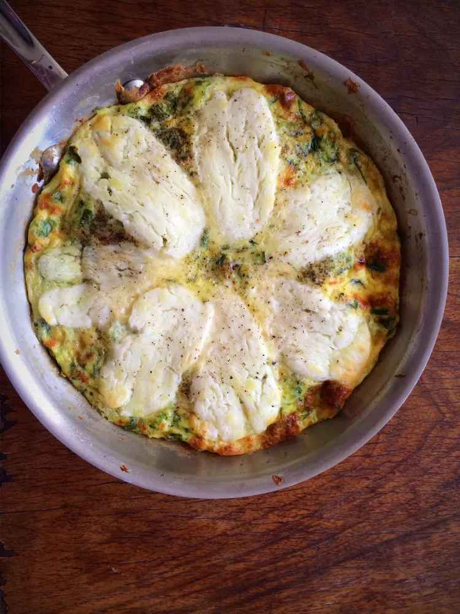

Home
Halloumi and Zucchini Frittata

Description
This easy zucchini and halloumi frittata is flavored with fresh herbs.
To make a frittata for 4, simply double the ingredients and use a larger frying pan.
Ingredients
- 1 tablespoon olive oil
- 1 large zucchini, grated and squeezed dry
- salt and freshly ground black pepper to taste
- 1 tablespoon chopped fresh mint
- 1 tablespoon chopped fresh dill
- 4 large eggs
- 4 ounces halloumi cheese, sliced
Steps
- Heat olive oil in a small, ovenproof skillet over medium heat.
Add zucchini and a pinch of salt and cook until soft, about 5 minutes.
Add chopped mint and dill, and cook 1 minute more.
- Beat eggs with salt and pepper in a small bowl. Pour into the hot skillet with the zucchini and briefly stir.
Cook without stirring to allow the bottom of the frittata to set, about 2 minutes.
Use a spatula around the edges of the skillet to ensure that the frittata isn't sticking as the bottom starts to set.
- Set an oven rack about 6 inches from the heat source and preheat the oven's broiler.
- Lay the slices of halloumi on the top of the frittata as the edges start to set.
Place the skillet under the broiler until the top of the frittata is fully set and cheese is slightly browned, about 5 minutes.
Serve immediately or at room temperature..